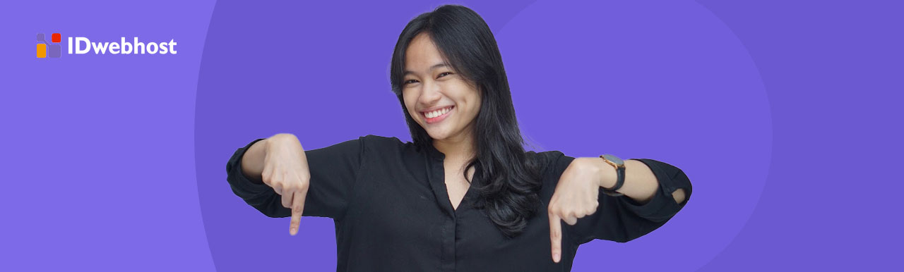
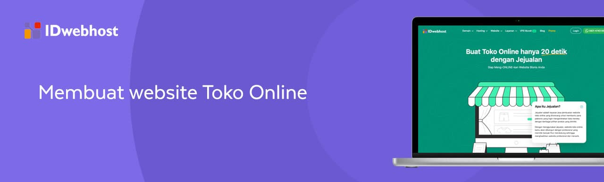
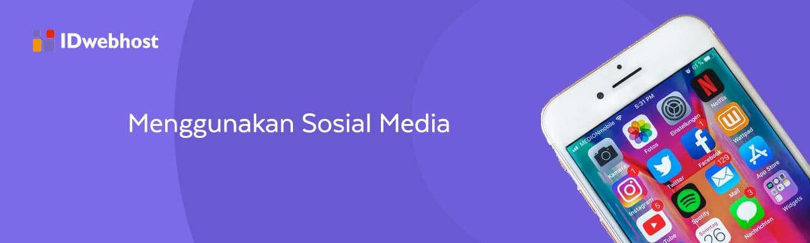
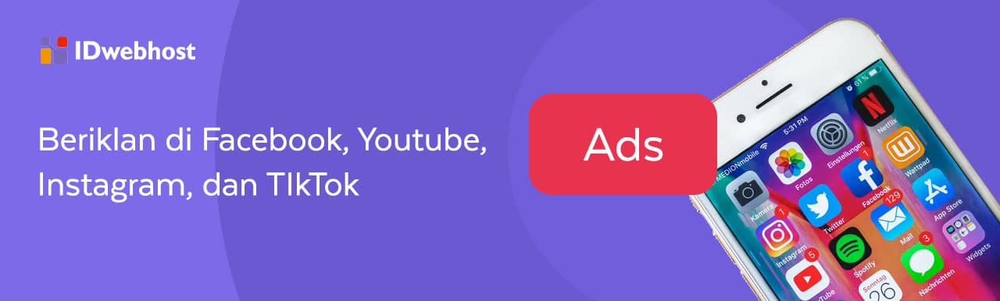
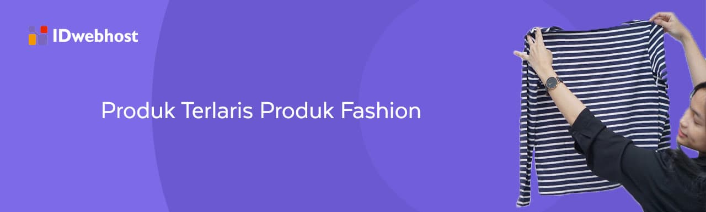

Cara Jualan Online
Bagaimana cara jualan online ? Hal ini menjadi pertanyaan bagi sebagian orang yang ingin mulai berwirausaha . Dengan semakin canggihnya teknologi, jualan online jadi lebih mudah dilakukan. Dengan jualan online, kamu bahkan tak harus memiliki toko fisik, lho!
Menarik, bukan?
Sahabat IDwebhost , jualan online adalah salah satu cara untuk mewujudkan kemandirian finansial. Bukan hanya mandiri finansial, untuk kamu yang tidak ingin terikat ikatan kerja dengan orang lain, jualan online bisa jadi pilihan. Tetapi, bagaimana sih, untuk mulai jualan online?
Nah, berikut adalah tips dan trik cara jualan online yang bisa kamu lakukan:
Mengapa Harus Jualan Online?
Dengan internet yang sangat mudah diakses, turut menggeser bagaimana cara orang berbelanja. Jika dulu untuk belanja harus datang ke toko, kini tidak lagi. Bahkan saat sedang rebahan sekalipun, orang masih bisa berbelanja.
Cukup dengan scroll-scroll layar hape, tinggal checkout, bayar , dan tinggal menunggu barang datang sampai ke rumah. Semudah itu.
Banyak produk yang bisa dibeli secara online
Mulai dari belanja untuk keperluan setiap hari sampai jajan memuaskan hobi setelah memperoleh gaji, semua dapat kamu lakukan kapan pun dan di mana pun lewat gadget di tangan.
Oleh sebab itu, tak heran jika makin banyak pelaku bisnis online yang bermunculan. Dengan modal yang lebih sedikit dan potensi cuan yang besar, berjualan online jadi tampak menjanjikan.
Ada banyak peluang bisnis tanpa modal yang berpotensi menghasilkan pendapatan jutaan , lho!
Eitsss... tetapi jangan terburu-buru dan terbuai dengan kata "cuan" tersebut, ya. Yuk, cari tahu cara jitu berjualan online agar cepat laku dan diburu konsumen!
Sebelum kamu lebih jauh belajar tentang jualan online, berikut adalah beberapa hal yang perlu kamu ketahui agar bisa menjalankan jualan online lebih mantap:
- Pondasi Membangun Bisnis Digital
- Panduan Lengkap Digital Marketing untuk Pemula
- Pentingnya Memiliki Keahlian Digital Marketing
- Skill yang Harus Dimiliki Digital Marketing
- Perbedaan Traditional dan Digital Marketing
- Pengaruh Marketing 4.0 dalam Pemasaran Digital
- Strategi Dasar Digital Marketing untuk Pemula
- Konsep Digital Marketing dalam Bisnis Online
- 4 Langkah Sukses Membangun Bisnis Online
- Mempersiapkan Online Marketing untuk Bisnis
Cara Jualan Online
1. Tahu Kebutuhan Pasar
Sebelum mulai berjualan online, sangat penting untuk tahu apa kebutuhan pasar atau target pasar . Sebagai contoh, kamu menjual pakaian wanita yang diperuntukkan untuk konsumen berumur 25-34 tahun yang penghasilannya kira-kira Rp5 juta per bulan.
Lalu, rupanya ada trend baju terkini yang sedang viral di sosial media. Lantas kamu mengeluarkan produk yang sedang trend itu, dengan bahan yang lebih premium. Dan menjualnya dengan harga jauh lebih mahal dari harga rata-rata produk yang sejauh ini kamu jual.
Kemungkinan, tidak banyak yang akan beli produk dengan bahan premium itu karena belum pasti cocok dengan target pasarmu. Mereka belum tentu butuh, dan lagi, harganya lebih mahal dari produk umumnya.
Nah, agar kesalahan yang sama tidak terjadi, sebelum terjun ke bisnis UMKM, kamu perlu mencari ide bisnis paling menguntungkan!
2. Menentukan Unique Selling Point
Bagi seorang pebisnis, apalagi bisnis online , harus memperhatikan konsistensi produkmu. Jangan lupa menganalisa supaya tahu apa yang diperlukan pelanggan.
Setelah tahu apa yang dibutuhkan oleh pelanggan, mungkin produk yang kamu jual sudah memiliki kompetitor. Jadi, pastikan produkmu memiliki nilai unik yang ingin dipasarkan ke pelanggan. Istilahnya adalah unique selling point.
Ada banyak indikator kepuasan pelanggan yang dapat digunakan untuk menentukan unique selling point.
Berikut ini beberapa contoh unique selling point:
- Jika pelanggan membeli produk skincare sebesar Rp500.000,- kamu bisa menggratiskan sheet mask.
- Jual sepatu online gratis semir.
- Jual aksesori ponsel gratis tempered glass.
- Kopi yang kamu sajikan datang dari beberapa petani lokal yang kamu berdayakan agar bisa sama-sama memperoleh penghasilan.
- Menu makanan yang kamu jual berbahan dasar tumbuh-tumbuhan yang ditanamkan dan dirawat langsung, karena itu lebih fresh dan berkualitas baik.
- Beli makanan senilai minimal Rp 200 ribu, gratis 1 menu khusus untuk driver yang mengantarkan
3. Membuat Website Toko Online
Setelah yakin dengan keunikan produk, buatlah toko online. Tetapkan platform apa yang ingin kamu gunakan, lalu optimalkan semua fitur yang ada untuk mendongkrak bisnis supaya sukses.
Kamu bisa membuat website khusus, website toko online dengan IDwebhost, atau sesimpel berjualan online di sosial media.
Di dalam toko online itu, kamu bisa memasukkan daftar produk lengkap dengan fotonya, deskripsi, harga, bahkan ulasan pelanggan.
Selain dapat meningkatkan penjualan, website juga bisa berperan sebagai sarana branding dari sebuah bisnis. Dengan branding yang bagus, bisnismu akan dinilai sangat profesional oleh pengunjung, dengan demikian kepercayaan pelanggan juga akan meningkat.
Yuk, belajar branding langsung dari pelaku bisnis onlineMembuat website toko online juga sangat penting. Dengan memiliki website toko online, kamu akan memiliki jangkauan yang luas dan akses yang mudah dalam transaksi jual beli secara online. Kamu juga bisa meningkatkan branding toko online.
Memang, saat ini ada marketplace yang lebih mudah dipakai. Lagipula, tak butuh waktu lama untuk membuat akun marketplace dan mulai menjalankan usaha. Pengguna marketplace juga sangat banyak.
Tetapi hal ini bikin persaingan di marketplace jadi sedemikian tinggi. Kamu harus berupaya keras untuk berebut pelanggan dengan perang diskon yang berdarah-darah, pelayanan yang cepat, dan membangun reputasi menggunakan rating. Belum lagi perkara branding yang seringkali memusingkan.
Kamu bisa menggunakan Facebook Marketplace sebagai tempat alternatif memasarkan produkmu, lho.
Membuat website toko online mungkin terlihat rumit di awal. Namun dengan memilih penyedia jasa pembuatan website yang tepat, sudah tentu mereka akan siap membantu mewujudkan website toko online impianmu.
Kamu bisa mendesain website agar sesuai dengan branding yang sudah direncanakan. Website toko online sangat ampuh untuk membantu meningkatkan branding. Membangun toko online adalah cara terbaik untuk meningkatkan branding produkmu.
Website toko online juga memungkinkanmu memegang data penting. Seperti data penjualan dan data pelanggan. Bermodal kedua data inilah, kamu bisa menentukan strategi penjualan, merawat pelanggan dan menjaga mereka agar setia menggunakan produkmu.
Berikut ini adalah beberapa hal yang harus kamu pertimbangkan ketika memilih jasa pembuatan website untuk bisnis:
-
Memiliki Fitur dan Tema yang Lengkap
Memilih sebuah tema yang menarik pada sebuah website sangat penting untuk perusahaan ataupun bisnis. Dengan pilihan tema yang beragam akan berdampak pada kualitas tampilan website yang kamu miliki.
Selain tema website , pemilihan fitur yang tepat juga dapat memberikan pengaruh pada sebuah website. Pilihlah jasa pembuatan website yang menawarkan fitur yang lengkap.
-
Kemudahan dan Kecepatan Akses
Hal kedua yang harus kamu pertimbangkan ketika akan memilih jasa pembuatan website adalah kemudahan dan kecepatan akses website yang dijanjikan.
Apalagi, layanan jasa pembuatan website memang sangat beragam. Maka kamu harus cermat ketika memilih jasa pembuatan website untuk website, terutama website bisnis.
Salah satu indikator penyedia hosting berkualitas persentase uptime minimal sebesar 99,9%.
-
Pilihan dan Harga Paket yang Sesuai
Harga kadang menjadi alasan ketika akan memilih perusahaan jasa pembuatan website. Ada pepatah yang mengatakan bahwa ada harga ada rupa. Namun hal ini tak selamanya berlaku. Dengan harga layanan IDwebhost yang terjangkau, kamu bisa memiliki website pertama. Fitur yang didapatkan juga tidak main-main.
-
Keamanan Terjamin
Salah satu isu yang selalu dibahas pada website adalah masalah keamanan. Data yang aman merupakan hal yang sangat berpengaruh pada kelancaran bisnis. Terutama jika kamu adalah pemilik toko online yang harus bisa menjamin keamanan data pelanggan, dan juga stok barang dagangan.
Untuk itu, pilihlah jasa pembuatan website terpercaya. Data-data harus terlindungi dengan baik dan aman, sehingga mengurangi ancaman para pencuri data yang banyak berkeliaran internet.
Salah satu tools untuk mengamankan website adalah penggunaan SSL atau Secure Socket Layer.
Itulah tadi berbagai kelebihan website toko online. Setelah itu, kamu bisa membuat toko online sendiri. Berikut cara sederhana buat toko online sendiri:
- Silakan pesan domain dan hosting di sini.
- Install WordPress.
- Pilih platform toko online. Seperti WooCommerce atau Prestashop.
- Lakukan pengaturan website,
- Input produk.
4. Buat Deskripsi Produk yang Menarik
Walaupun terlihat mudah, membuat deskripsi produk tidaklah sesederhana itu. Memilih kata-kata untuk membuat produk agar laku terjual harus dipertimbangkan masak-masak. Beberapa kata yang dapat kamu gunakan untuk membuat bisnis sukses adalah eksklusif, khusus, diskon, gratis, dan ada banyak lagi.
Bila kamu mempunyai modal lebih, merekrut copywriter untuk bisnis bisa jadi sebagai investasi yang bagus. Bagaimana, berminat untuk coba cara berjualan online agar cepat laku yang ini?
Namun, jika tidak ingin mengeluarkan biaya besar di awal dengan merekrut copywriter, kamu juga bisa belajar menjadi copywriter bagi produkmu dengan cara berikut:
-
Menentukan Persona Produk
Dari sekian banyak kunci sukses dalam berbisnis, mengetahui siapa kamu dan produk apa yang kamu jual adalah kunci yang sangat penting. Kedua faktor ini tidak dapat dipisahkan begitu saja.
Dengan mengetahui gambaran siapa pelangganmu, kamu bisa menyesuaikan copy yang dekat dan relate dengan kehidupan target pasar.
Misalnya, kamu membuat produk dengan target pasar anak muda. Tentu kamu akan menggunakan bahasa yang santai, dan sesekali menggunakan kata-kata slang.
Beda halnya jika kamu menyasar segmen pasar orang tua. Bahasa yang digunakan tentu lebih umum dan cenderung formal.
Jenis produk juga dapat mempengaruhi gaya bahasa yang digunakan di deskripsi produk. Misal kamu menjual kaos untuk anak muda, bisa menyelipkan humor khas anak muda masa kini yang jadi target pasar.
-
Penggunaan Tone yang Natural
Ketika membuat deskripsi produk, tak perlu saklek mengikuti kaidah Ejaan Yang Disempurnakan (EYD). Dengan bahasa yang natural, deskripsi produk terdengar lebih friendly. Hasilnya, kamu bisa dengan mudah menyentuh sisi emosional audiens.
Bahasa yang natural adalah bahasa yang mudah untuk dibaca dan dipahami. Ketika sebuah deskripsi produk mudah dipahami, audiens tak perlu membacanya berkali-kali. Cukup sekali, mereka sudah mengerti apa yang kamu tawarkan.
-
Ceritakan bahwa produk bisa menjadi solusi
Menceritakan keunggulan produk di deskripsi tentu sangat baik. Namun, sebaiknya jangan cuma menceritakan keunggulannya saja. Ceritakan bahwa produkmu adalah solusi untuk setiap permasalahan pelanggan.
Seperti yang telah disebutkan pada bagian sebelumnya hanya menceritakan keunggulan akan menyulitkanmu untuk menyentuh hati audiens.
Cara yang bisa kamu gunakan, seperti ceritakan siapa pelangganmu, masalah apa yang menyulitkan mereka, dan apa solusi yang ditawarkan oleh produkmu.
5. Menggunakan Sosial Media
Bila target pasarmu individu berusia 18-34 tahun, kamu harus memakai sosial media sebagai media bisnis karena kenyataannya, sekitar 95% pemakai media sosial adalah orang-orang di rentang umur tersebut.
Tingkatkan engagement agar terjalin hubungan yang kuat antara kamu sebagai brand dengan konsumen. Buatlah mereka menjadi pelanggan setia.
Pelajari berbagai tipe konten yang dapat menaikkan engagement di media sosial.
Untuk membuat konten yang cocok dengan target pasar, kamu harus melakukan analisis terlebih dulu. Buat tujuan yang ingin dicapai, tentukan proses riset marketing dan metrik yang sesuai, dan lakukan riset kompetitor.
Dengan mengetahui hal ini, kamu bisa membuat konten yang menarik, menentukan waktu untuk mengunggah konten yang tepat, manfaatkan fitur iklan, dan mengevaluasi strategi marketing sosial media bisnismu.
6. Buat Promo Menarik
Pelanggan mana, sih, yang tidak menyukai promo? Promo dapat membuat bisnismu menjadi pusat perhatian konsumen. Seperti promo IDwebhost yang selalu update setiap bulannya.
Tak hanya itu, ada peluang untuk peningkatan omset, sampai mempererat hubungan dengan pelanggan.
Kenyataannya, 91% konsumen mulai mengunjungi usaha baru setelah mengetahui ada promosi yang ditawarkan. Barangkali, kamu juga pernah menjadi salah satu konsumen tersebut?
Hanya saja, jangan sembarangan ketika membuat promo. Salah-salah, bukannya untung, kamu malah buntung kalau orang hanya membeli ketika periode promo. Biaya promo yang kamu keluarkan tak bisa diolah menjadi keuntungan. Ini akan merugikanmu.
Seperti halnya IDwebhost, yang selalu memberikan promo hosting dan domain murah. Tentu ini bisa menarik minat orang untuk membeli hosting dan domain murah menggunakan kode promo IDwebhost .
Selain itu, pastikan produkmu memang berkualitas. Setidaknya, memiliki kelebihan dibanding apa yang tidak dimiliki oleh kompetitor.
7. Memanfaatkan Word of Mouth Marketing
Siapa sangka, apa kata orang ternyata bisa memberikan pengaruh pada keberlangsungan sebuah bisnis. Inilah sebab mengapa influencer dan Key Opinion Leader dibayar mahal oleh para pemilik brand.
Maka, salah satu tips cara jualan online yang bisa kamu coba adalah memaksimalkan word of mouth marketing. Cara paling efektif dalam rangka pemasaran dari mulut ke mulut ini adalah meminta pelanggan yang sudah membeli produkmu untuk memberikan review pengalaman belanja di lapakmu.
Lewat review, calon pelanggan bisa menilai kualitas produk dan pelayanan bisnismu. Selain itu, kamu dapat meyakinkan calon pelanggan bahwa produkmu benar-benar real
Jika kamu memiliki budget lebih, tak ada salahnya untuk menjajal promosi menggunakan selebgram dan micro influencer. Peluang bisnismu menjangkau lebih banyak orang akan terbuka lebar.
Tetapi, memilih influencer juga tidak bisa sembarangan. Pilihlah influencer yang memang cocok dengan bisnis dan target marketmu.
8. Beriklan di Facebook, YouTube, Instagram, dan TikTok
Tips jualan online lainnya, masih berkaitan dengan sosial media. Kita semua paham, bahwa media sosial dapat memberikan pengaruh yang besar bagi sebuah bisnis saat ini.
Jika pada bagian sebelumnya, yang dibahas adalah sosial media secara umum, di bagian kali ini, kita akan membahas tentang social media ads . Apalagi, sosial media adalah cara jualan online yang cukup menjanjikan.
Social media advertising merupakan iklan yang berfokus pada meningkatkan konversi atau sales di media sosial.
Keunggulannya, iklan bisa meningkatkan kesempatan produkmu agar dilihat oleh banyak orang secara cepat. Hal ini karena tingginya pengguna media sosial di wilayah Indonesia yang berjumlah sekitar 170 juta pengguna.
Selain itu, sudah banyak social media yang mempunyai platform advertising sendiri, jadi kamu hanya cukup melakukan sedikit konfigurasi. Mulai dari penargetan, jenis iklan, konten iklan, pembayaran, sampai pada pelaporan tersedia otomatis.
Beberapa contoh social media yang mempunyai platform advertising adalah:
- Facebook Ads - Penempatan iklan biasanya pada bagian beranda atau sidebar, serta terdapat beberapa jenis iklan dan ukuran banner yang berbeda.
- Instagram Ads - Berada di bawah pengelolaan Facebook Ads Manager, iklan dapat ditampilkan pada bagian feed dan stories Instagram.
- Twitter Ads - Iklan yang dapat menggunakan teknik copywriting.
- LinkedIn Ads - Cocok fokus pada pasar B2B.
- TikTok Ads - Platform ini memiliki pertumbuhan yang pesat di Indonesia dan terdapat beberapa pilihan jenis ads yang bisa digunakan.
Salah satu media sosial yang cukup banyak menyita perhatian saat ini adalah TikTok. Aplikasi besutan pengembang asal China, ByteDance dianggap sebagai platform jualan terbaik. Ini berkat adanya fitur bernama TikTok Shop.
TikTok Shop adalah fitur e-commerce dalam media sosial TikTok yang memungkinkan para penggunanya untuk mempromosikan sekaligus menjual produk dalam satu platform.
Untuk dapat menggunakan fitur ini, kamu harus mengubah akun TikTok menjadi akun bisnis lebih dulu. Setelah itu, barulah kamu dapat mendaftarkan akun sebagai penjual melalui TikTok Seller.
Untuk itu, kamu perlu melakukan targeting. Targeting penting dilakukan untuk membantumu menemukan pelanggan yang tepat.
Berikut adalah empat opsi targeting yang bisa dilakukan di media sosial:
- Interest targeting. Targeting yang satu ini mirip dengan keyword targeting yang ada di Google Ads . Sosial media yang kamu gunakan untuk beriklan dapat menganalisa pengguna yang sebelumnya pernah menggunakan kata kunci yang kamu pakai.
- Behaviour targeting. Kamu bisa menjangkau calon pelanggan tertentu berdasarkan kebiasaan belanja mereka.
- Custom targeting. Dengan targeting yang satu ini, kamu bisa menjangkau pelanggan dengan data leads yang sudah dimiliki. Seperti nomor telepon dan alamat email.
- Lookalike targeting. Kamu bisa menjangkau pelanggan baru dengan karakteristik yang hampir sama, dengan pelangganmu saat ini.
Dalam melakukan iklan di sosial media, mungkin akan ditemui berbagai kesulitan. Namun, itulah tantangannya. Untuk tahu lebih banyak tentang cara cara iklan di sosial media, blog IDwebhost punya banyak artikel yang bisa jadi inspirasimu, lho!
Setelah kamu mengetahui bagaimana cara jualan online yang baik dan benar, selanjutnya kamu bisa mengoptimalkan bisnis online kamu untuk mendapatkan hasil yang maksimal. Berikut tips-tips yang bisa kamu pelajari dan terapkan:
- Cara Jitu Jualan Online Cepat Laku
- 4 Strategi Pemasaran Online Paling Efektif
- Trik Psikologi untuk Meningkatkan Penjualan
- Tips Sukses Bisnis Afiliasi
- Tutorial Lengkap Google Bisnisku
- 7 Langkah Mengembangkan Bisnis di Era Digital
- 7 Strategi Pemasaran Online untuk Produk Makanan
- Mengembangkan Bisnis dengan Konsultan Digital Marketing
- Cara Mengoptimalkan Content Marketing
- Panduan Lengkap Sosial Media Marketing
- Tips Jualan di Facebook Banjir Orderan
- Meningkatkan Penjualan dengan Facebook Marketplace
- Cara Promosi Bisnis Menggunakan TikTok
- Cara Daftar TikTok Shop Terbaru
- 12 Tips Mudah untuk Sukses Jualan Online Banyak Untung
- Cara Agar Bisnis Online Tetap Untung
Ide Jualan Online Modal Kecil Untuk Pemula
1. Produk kecantikan Make up dan Skincare
Salah satu ide jualan online yang bisa kamu coba adalah bisnis kecantikan. Ini termasuk bisnis yang berkaitan dengan produk make up dan skincare.
Industri kecantikan adalah bisnis yang pertumbuhannya sangat kencang. Bahkan diramalkan sektor kosmetik akan terus mengalami kenaikan di tahun-tahun mendatang.
Jika kamu tertarik untuk terjun dan jualan produk kosmetik, skin care, dan perawatan tubuh ada baiknya produk yang ingin dijual memiliki surat izin dari BPOM untuk keamanan dan kenyamanan konsumen. Dengan begitu konsumen akan percaya pada produk yang kamu jual.
2. Produk Terlaris Produk Fashion
Bisnis Fashion adalah salah satu bisnis yang begitu cepat berubah, utamanya dalam hal desain yang ditawarkan kepada pasar. Kebutuhan pasar pun berkembang seiring waktu. Maka pemain dalam bisnis fashion terus melakukan inovasi pada produk mereka.
Kamu harus inovatif jika ingin terjun ke bisnis fashion. Hal ini menjadi kunci sukses cara memulai bisnis fashion dengan brand sendiri. Jika kamu tidak melakukan inovasi, yang ada bisnismu hanya akan muncul dan hilang tanpa dikenali oleh pasar.
Kamu juga bisa menggunakan media sosial untuk melihat trends fashion. Cukup ketik keyword produk fashion yang ingin kamu cari dengan hashtag (#) maka akan terlihat banyaknya postingan terkait fashion yang sedang trends di pasaran.
Produk fashion juga memiliki banyak pilihan jenis produk. Mulai dari fashion wanita, pria, hingga fashion untuk anak-anak pun juga ada.
3. Produk Terlaris Obat-Obat Herbal
Obat herbal menjadi produk alternatif kesehatan masyarakat. Saat ini kebutuhan akan olahan obat herbal menjadi pilihan bagi masyarakat untuk menjaga daya tahan tubuh mereka.
Banyak yang percaya bahwa jamu atau obat herbal efektif menjaga daya tahan tubuh. Terlebih saat pandemi, di mana masyarakat cenderung lebih memperhatikan gaya hidup sehat mereka.
Minum jamu tradisional sendiri sejak dulu sudah menjadi bagian dari masyarakat Indonesia. Namun saat pandemi ini penjualan obat-obat herbal mengalami peningkatan.
Untuk sukses jualan obat herbal tentunya harus memberikan manfaat untuk konsumennya. Jika konsumen merasakan manfaat dari produkmu, maka akan banyak ulasan positif dari orang-orang sehingga mereka akan melakukan repeat order.
4. Produk Alat Kesehatan
Sekali lagi produk kesehatan di masa pandemi saat ini banyak yang membutuhkan. Pada poin di atas, kita sudah membahas tentang obat herbal yang menjadi alternatif kesehatan masyarakat.
Kemudian selanjutnya adalah alat kesehatan. Produk seperti masker, alat pengecek suhu, alat pengecek jantung menjadi barang yang sering dicari oleh masyarakat saat ini. Produk kesehatan menjadi kebutuhan yang tidak boleh ditinggalkan mengingat masa seperti ini menjaga kesehatan adalah suatu kewajiban.
5. Perlengkapan Rumah Tangga
Perlengkapan rumah tangga hingga sekarang selalu dibutuhkan. Entah itu perabotan, alat masak, mesin cuci dan lain sebagainya. Selain itu bahan-bahan makanan juga termasuk kebutuhan yang setiap hari harus terpenuhi.
Tak jarang untuk keluar rumah saat ini menjadi sedikit ragu untuk itu banyak yang memilih menyetok terlebih dahulu untuk menghindari bolak-balik mendekat kerumunan seperti di pasar.
Jika bahan makanan masyarakat memilih menyetok terlebih dahulu maka untuk peralatan dan kelengkapan lain mereka memilih untuk berbelanja online. Produk perlengkapan rumah tangga saat ini menjadi salah satu yang terlaris mengingat masyarakat sekarang lebih memilih belanja online.
Jualan online perlengkapan rumah tangga menjadi pilihan bisnis yang menguntungkan saat ini. Yuk, intip inspirasi usaha online rumahan!
6. Produk Terlaris Aksesori Gadget
Aksesoris gadget menjadi kebutuhan yang penting bagi pengguna smartphone dan laptop. Segala yang berkaitan dengan aksesoris gawai saat ini juga mengalami peningkatan penjualan. Mulai dari baterai, headset, casing dan lain-lain.
Baterai, misalnya. Anak-anak muda sekarang lebih suka menghabiskan waktu di rumah untuk bermain game, sehingga baterai handphone cepat panas dan gampang drop. Solusi paling mudah dari masalah ini, ya, beli gadget baru.
Selain untuk main game, penggunaan gawai meningkat seiring kebutuhan belajar mengajar secara daring. Maka banyak yang membutuhkan aksesoris pendukung seperti earphone, power bank, screen protector, dan charger. Produk aksesoris gadget ini menjadi peluang jualan online yang menguntungkan di tahun-tahun yang akan datang.
7. Jualan Sembako Online
Siapa sangka, jualan sembako dan barang kebutuhan pokok, sekarang bisa dilakukan secara online.
Kita semua tentu tahu, sembako adalah kebutuhan dasar manusia. Situasi pandemi membuat pedagang memutar otak, bagaimana cara menjual barang kebutuhan pokok tanpa melanggar protokol kesehatan.
Akhirnya mulai banyak platform yang memungkinkan pedagang sembako menjual barangnya secara online. Beberapa contoh kebutuhan pokok yang paling laku keras di toko online, antara lain minyak goreng, telur, minyak goreng, gula, dan lain sebagainya.
Sebagai strategi persaingan, kamu tak perlu mematok harga yang terlalu tinggi karena produk jenis ini seringkali dicari oleh konsumen.
8. Bisnis Thrift shop
Thrifting atau berburu pakaian bekas, kini menjadi sebuah tren yang digandrungi anak-anak muda. Pakaian bekas yang dicari, tentu bukan pakaian bekas sembarangan. Umumnya, penggemar thrifting mencari fashion item dari brand-brand ternama yang masih layak untuk dipakai.
Thrifting adalah imbas dari fast fashion yang kini marak dilakukan oleh banyak brand fashion dunia. Sirkulasi produk fashion jadi sangat cepat.
Namun, thrifting bukan semata-mata tentang pakaian bekas. Menurut Urban Dictionary, thrifting adalah aktivitas belanja demi mendapatkan harga barang yang lebih murah. Barang yang dimaksud, juga bukan barang biasa yang umum diketahui pasar saat ini.
Penggemar OOTD adalah pangsa pasar terbesar produk thrift shop. Potensi bisnis juga tidak main-main.
Selain 8 ide jualan online di atas, kamu juga bisa menyesuaikan produk-produk apa saja yang akan dijual dengan situasi dan kondisi kamu saat ini. Baik dari sisi trend, relasi, keuangan dan lain sebagainya:
- 11 Ide Bisnis Milenial Modal Kecil
- Ide Bisnis UKM Paling Menguntungkan
- Kumpulan Ide Bisnis Makanan Paling Laris
- 5 Peluang Bisnis Online Tanpa Modal Menghasilkan Jutaan
- 7 Produk untuk Jualan Online Paling Laris dan Pasti Laku
- 15 Ide Bisnis Digital yang Wajib Kamu Coba
- 12 Peluang Bisnis Digital yang Perlu Kamu Tahu
Jadi, siapkah kamu untuk jualan online?
Teknologi yang semakin canggih membuat jualan online lebih mudah dilakukan. Ada banyak platform yang bisa digunakan untuk jualan online. Mulai dari sosial media, marketplace, ecommerce sampai website toko online.
Nah, buat kamu yang ingin atau sedang menjalankan bisnis online, IDwebhost punya layanan pembuatan website toko online dengan fitur yang super lengkap. Dengan toko online, jangkauan pasarmu akan lebih luas dan makin besar potensi untuk cuan! Jangan takut untuk mulai jualan online sekarang!
Temukan komunitas yang nggak cuma seru-seruan,
tapi punya berbagai tips yang penuh
kebaikan!